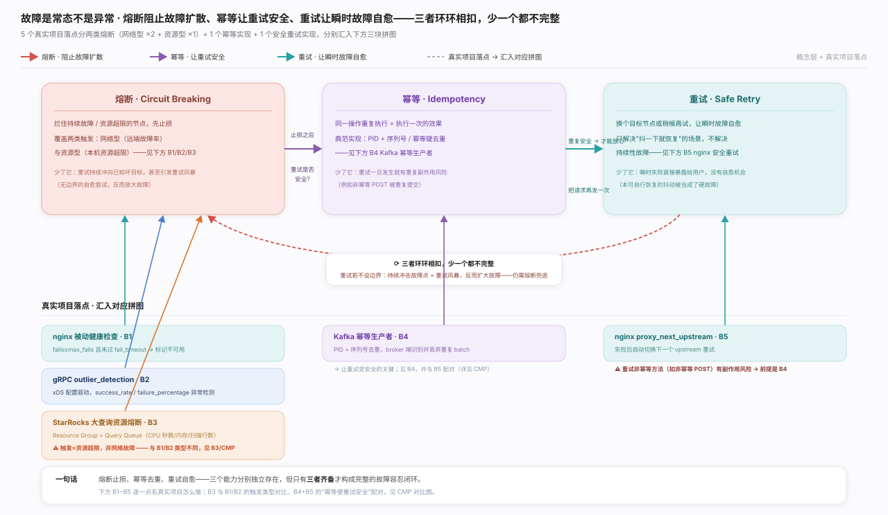
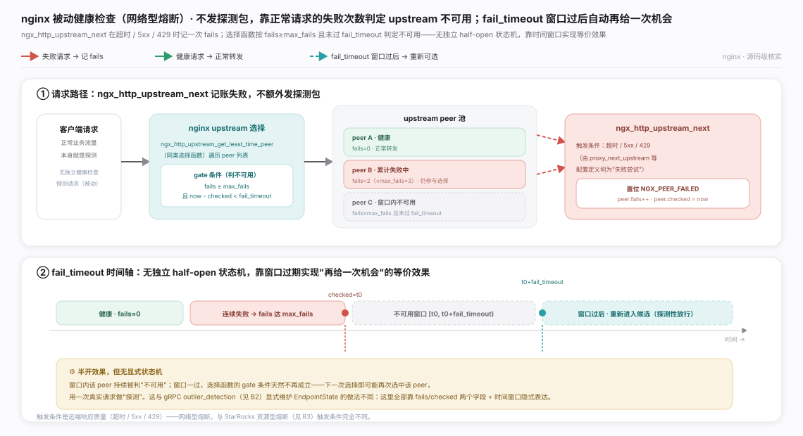
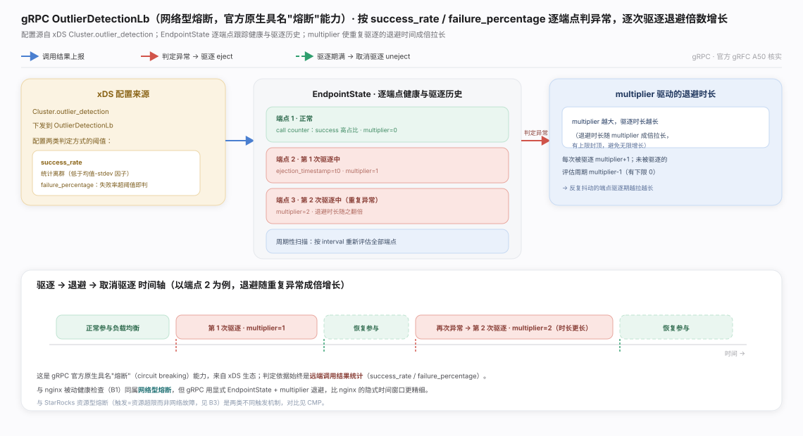
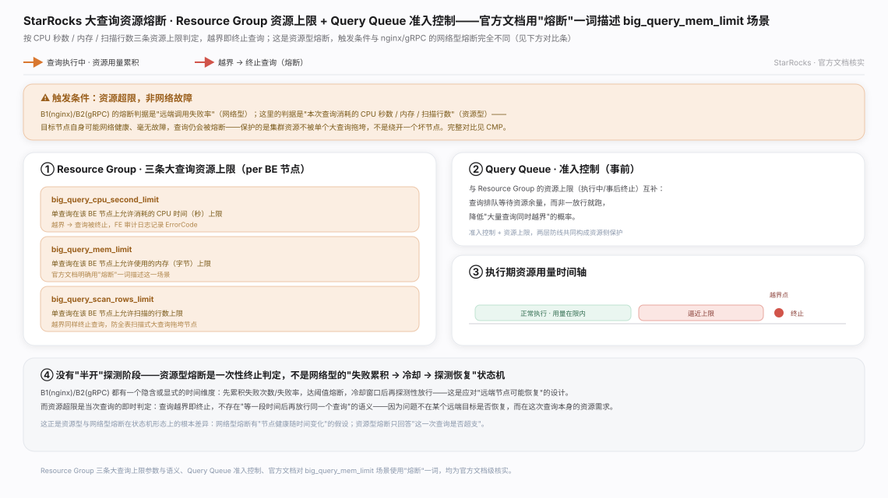
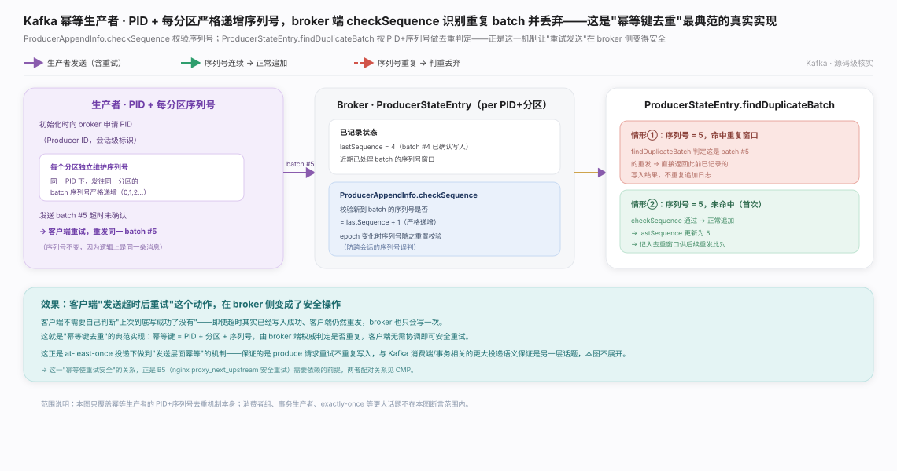
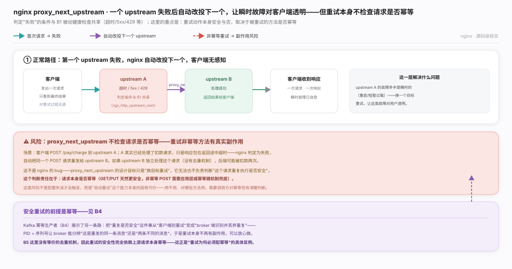
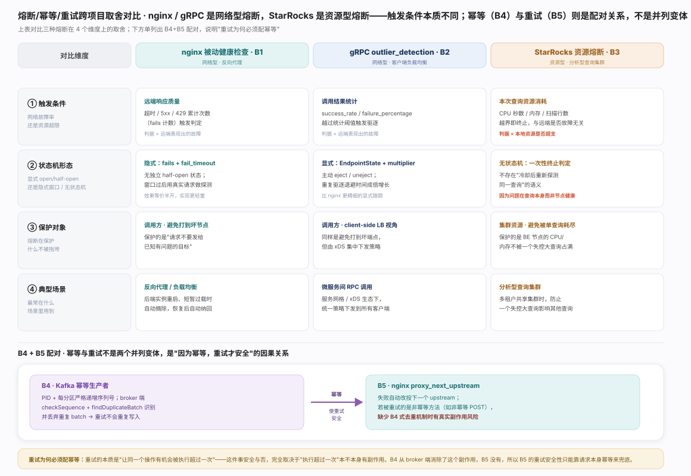

熔断止损、幂等去重、重试自愈环环相扣，缺一不完整。5 个真实落点分两类：网络型熔断（nginx 被动健康检查、gRPC outlier_detection）与资源型熔断（StarRocks 大查询），加 Kafka 幂等生产者、nginx proxy_next_upstream（重试本身，也是「重试为何必须配幂等」的反例），三块拼图见生态图。

nginx · 被动健康检查：不发探测包，靠真实请求失败记账达成「熔断 + 半开探测」等价效果，判据是远端故障信号，属网络型熔断，机制见图。

gRPC · outlier_detection：官方原生具名熔断，配置由 xDS 统一下发、按成功率判异常并退避，同为网络型但比 nginx 的隐式时间窗口更显式主动，机制见图。

StarRocks · 资源熔断：三条资源上限 + Query Queue 准入，越界即终止。这是资源型熔断——判据是本次查询资源超支，一次性终止、无「冷却重探测」语义，机制见图。

Kafka · 幂等去重：PID + 分区序列号使 broker 对重发的同一 batch 只真正写一次；这一「幂等使重试安全」正是 B5 依赖却缺失的前提，机制见图。

nginx · 安全重试：proxy_next_upstream 失败改投下一 upstream，但不检查被重试请求是否幂等。安全重试的前提是幂等——B4 从 broker 端消除了重复副作用，B5 没有等价机制，这正是反例，风险边界见图。

三类熔断按触发条件分两派：网络型（B1/B2，判据=远端故障，有冷却重探测）与资源型（B3，判据=资源超支，一次性终止）。B4 与 B5 不是并列变体而是因果配对——重试让操作可能多次执行，安全与否取决于重复是否有副作用，B4 消除了它、B5 没有。完整对比见图。一句话总纲：止损、去重、自愈三者必须成套设计，任缺一环都会让另两环失效。
nginx ngx_http_upstream_module（nginx 官方文档 · 被动健康检查 max_fails/fail_timeout 与 proxy_next_upstream）
A50: xDS Outlier Detection Support（gRFC，grpc/proposal，2022）
Kafka 官方文档（Message Delivery Semantics 一节，投递语义与幂等生产者；具体锚点本轮未能核实是否稳定，故只给根链接）